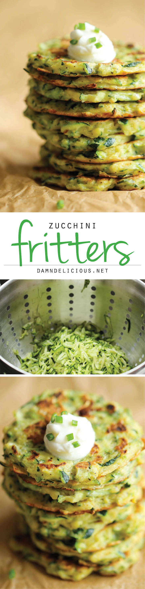

Healthy and Delicious Zuchini Fritters

Healthy and Delicious!!
Ingredients
- 1 1/2 pounds zucchini, grated (about 3 cups)
- 1 teaspoon salt
- 1/4 cup all-purpose flour
- 1/4 cup grated Parmesan
- 2 cloves garlic, minced
- 1 large egg, beaten
- Kosher salt and freshly ground black pepper, to taste
- 2 tablespoons olive oil
Directions
- Place grated zucchini in a colander over the sink. Add salt and gently toss to combine; let sit for 10 minutes. Using a clean dish towel or cheese cloth, drain zucchini completely.
- In a large bowl, combine zucchini, flour, Parmesan, garlic and egg; season with salt and pepper, to taste.
- Heat olive oil in a large skillet over medium high heat. Scoop tablespoons of batter for each fritter, flattening with a spatula, and cook until the underside is nicely golden brown, about 2 minutes. Flip and cook on the other side, about 1-2 minutes longer.
- Serve immediately.